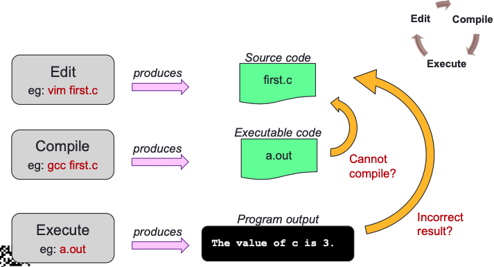
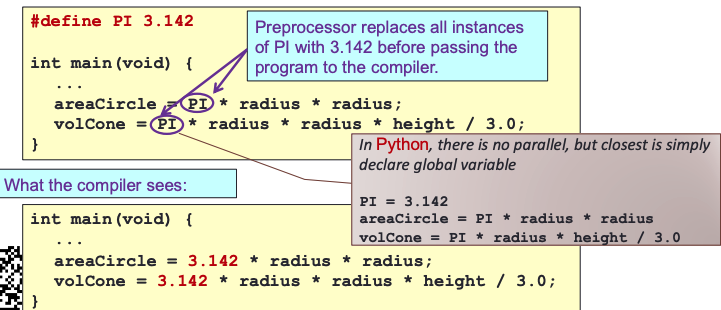

Overview of C Programming¶
Edit, Compile, Execute¶

A Simple C Program¶
General Form¶
preprocessor directives // Insturction to the compiler, eg librady headers
main function header
{
declaration of variables
executable statements
// Mainly consists of 3 parts
// - Input data
// - Computation
// - Output results
}

By convention, return 0 is for successful execution and -1 for unsuccessful execution.
von Neumann Architecture¶


- Central Processing Unit (CPU)
- Registers
- A control unit containing an instruction register and program counter
- An arithmetic/logic unit (ALU)
- Memory
- Stores both program and data in random-access memory (RAM)
Variables¶
Every variable is identified by a name (identifier), has a data type, and contains a value which could be modified. (Each variable actually has an address too)
- A variable is declared with a data type
- Variables may
- be initialized during declaration
- Without initialization, the variable contains an unknown value
Data types¶
Every variable must be declared with a data type (strongly typed)
int: For integersfloatordouble: For real numbers- 4 bytes for float and 8 bytes for double (in sunfire)
char: For characters
Macro expansions¶
One of the uses is to define a macro for a constant value
Eg: #define PI 3.142 // use all CAP for macro

Input/Output¶
scanf ( format string, input list );printf ( format string );printf ( format string, print list );
Format specifiers¶
| Placeholder | Variable Type | Function Use |
|---|---|---|
| %c | char | printf/ scanf |
| %d | int | printf / scanf |
| %f | float or double | printf |
| %f | float | scanf |
| %if | double | scanf |
| %e | float or double | printf (for scientific notation) |
- Examples of format specifiers used in printf():
%5d: to display an integer in a width of 5, right justified%8.3f: to display a real number (float or double) in a width of 8, with 3 decimal places, right justified- Note: For
scanf(), just use the format specifier without indicating width, decimal places, etc.
int age;
double cap; // cumulative average point
printf("What are your age and CAP? ");
scanf("%d %lf", &age, &cap);
printf("You are %d years old, and your CAP is %f\n", age, cap);
“age” refers to value in the variable age. “&age” refers to (address of) the memory cell where the value of age is stored.
Escape sequence¶
| Escape sequence | Meaning | Result |
|---|---|---|
| \n | New line | Subsequent output will appear on the next line |
| \t | Horizontal tab | Move to the next tab position on the current line |
| \" | Double quote | Display a double quote " |
| \%% | Percent | Display a percent character % |
Escape sequences are used in printf() function for certain special effects or to display certain characters properly
Compute¶
Function¶
A function body has two parts
- Declarations statements: tell compiler what type of memory cells needed
- Executable statements: describe the processing on the memory cells
Declaration statement¶
- To declare use of variables
- eg
int count,value;
User-defined Identifier¶
- Name of a variable or function
- May consist of letters (a-z, A-Z), digits (0-9) and underscores, but MUST NOT begin with a digit
- Case sensitive, i.e. count and Count are two distinct identifiers
- Guideline: Usually should begin with lowercase letter
- Must not be reserved words (next slide)
- Should avoid standard identifiers (next slide)
Reserved Words¶
- Have special meaning in C
- Eg:
int,void,return
Standard identifiers¶
- Names of common functions, such as
printf,scanf - Avoid naming your variables/functions with the same name of built-in functions you intend to use
Executable Statements¶
- I/O statements (eg: printf, scanf)
- Computational and assignment statements
Assignment statements¶
- Store a value or a computational result in a variable
- (Note: ‘=’ means ‘assign value on its right to the variable on its left’; it does NOT mean equality)
- Left side of ‘=’ is called lvalue
Side effect¶
An assignment statement has the side effect of returning the value of its right-hand side
The above makes use of the side effect of the assignment statement a = 12; (which returns 12) and assigns it to z
Side effects have their use, but avoid convoluted codes:
Side effects also apply to expressions involving other operators (eg: logical operators).
Arithmetic operations¶
- Binary Operators:
+,–,*,/,%(remainder)- Left Associative (from left to right)
46 / 15 / 2 → 3 / 2 → 1
- Unary operators:
+,–- Right Associative
p = +4 * 10
- Right Associative
- Execution from left to right, respecting parentheses rule, and then precedence rule, and then associative rule
- addition, subtraction are lower in precedence than multiplication, division, and remainder
- Truncate result if result can’t be stored
int n; n = 9 * 0.5;result in4being stored inn
Type casting¶
Use a cast operator to change the type of an expression. Eg float a = (float) 5/4
Selection Structures¶
C provides two control structures that allow you to select a group of statements to be executed or skipped when certain conditions are met.
If...else...¶
if (condition) {
/* Execute these statements if TRUE */
}
else {
/* Execute these statements if FALSE */
}
Switch¶
/* variable or expression must be of discrete type */
switch ( <variable or expression> ) {
case value1:
Code to execute if <variable or expr> == value1
break; // If no break, it will continue down the case.
case value2:
Code to execute if <variable or expr> == value2
break;
...
default:
Code to execute if <variable or expr> does not
equal to the value of any of the cases above
break;
}
Condition and Relational Operators¶
| Relational Operator | Interpretation |
|---|---|
| < | is less than |
| <= | is less than or equal to |
| > | is greater than |
| >= | is greater than or equal to |
| == | is equal to |
| != | is not equal to |
Truth Values¶
There is no Boolean type in ANSI C. Instead, we use integers:
- 0 to represent false
- Any other value to represent true (1 is used as the representative value for true in output)
Logical Operators¶
| A | B | A && B | A || B | !A |
|---|---|---|---|---|
| False | False | False | False | True |
| False | True | False | True | True |
| True | False | False | True | False |
| True | True | True | True | False |
Evaluation of Boolean Expressions¶

int x, y, z,
a = 4, b = -2, c = 0;
x = (a > b || b > c && a == b);
// x is true (1) but
//gcc issues warning due to ambiguity. Use parentheses instead
Short-Circuit Evaluation¶
The code below will not cause an error because when the code evaluates a != 0 to true, it will not evaluate the next expression. Also known as Lazy evaluation.
expr1 || expr2: Ifexpr1is true, skip evaluatingexpr2and return true immediately, as the result will always be true.expr1 && expr2: Ifexpr1is false, skip evaluatingexpr2and return false immediately, as the result will always be false.
Repetition Structures¶
C provides three control structures that allow you to select a group of statements to be executed repeatedly. white, do white, for
Break in a loop¶
In a nested loop, break only breaks out of the inner-most loop that contains the break statement.
Continue in a loop¶

In a nested loop, continue only skips to the next iteration of the inner-most loop that contains the continue statement.
Summary¶